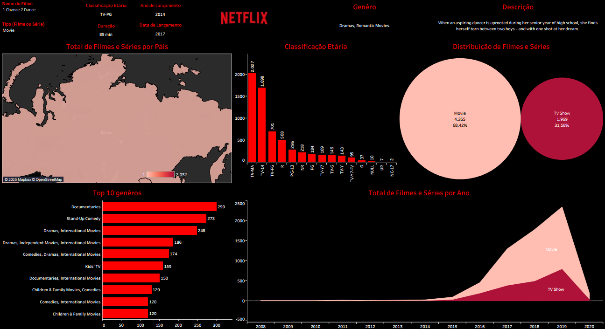
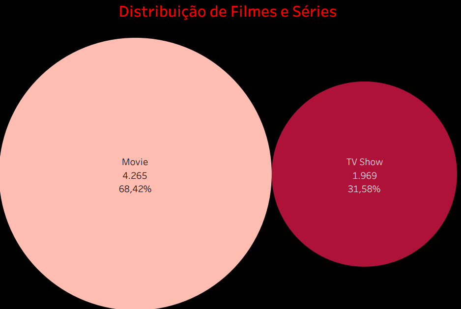
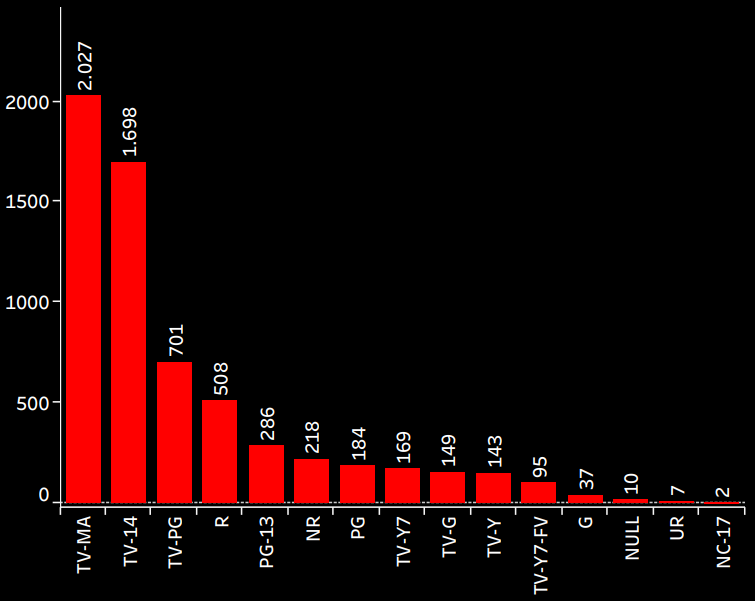
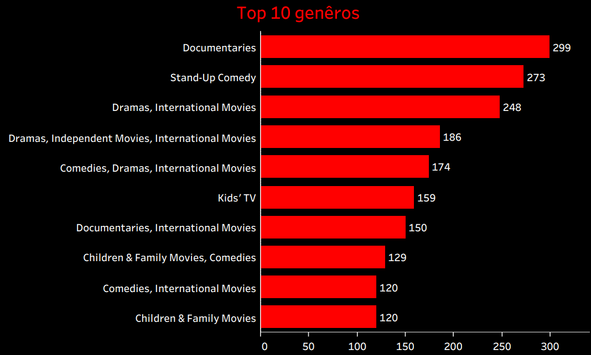
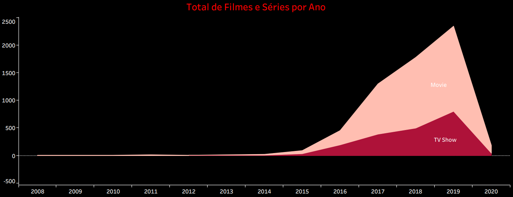

Projeto: Dashboard Netflix - Análise de Conteúdo e Tendências de Streaming
Introdução
Este projeto apresenta um Dashboard analítico com foco na vasta biblioteca de conteúdo da Netflix. O principal objetivo foi explorar e visualizar as tendências de filmes e séries, a distribuição de gêneros, classificações etárias e o volume de lançamentos ao longo dos anos. A construção deste painel foi na ferramenta Tableau. O dashboard visa capacitar analistas de conteúdo e estrategistas de mercado a compreender melhor o portfólio da Netflix e as preferências do público.
Obs: O datset contém dados de uma fonte americana e por isso algumas features podem não ser conhecidas.
Estrutura do Projeto
O dashboard é organizado para oferecer uma visão multifacetada do conteúdo da Netflix:
- Visão Geral do Conteúdo: Distribuição entre filmes e séries, e suas respectivas quantidades.
- Classificação Etária: Análise da variedade de classificações (TV-MA, TV-14, TV-PG, etc.) e a proporção de cada uma.
- Top 10 Gêneros: Ranking dos gêneros mais prevalentes na plataforma.
- Tendência de Lançamentos por Ano: Evolução do volume de filmes e séries adicionados anualmente.
- Distribuição de Conteúdo por País: Um mapa para visualizar a origem ou o foco geográfico do conteúdo.
- Detalhe de Título: Informações específicas sobre um título, como nome, tipo, classificação, ano de lançamento, duração e descrição.
Tecnologias Utilizadas
Para a construção deste dashboard analítico, a ferramenta empregada foi:
- Tableau Desktop: Utilizado para conectar a fonte de dados, realizar as transformações necessárias, criar os cálculos e construir os visuais interativos que compõem o dashboard. A escolha do Tableau permitiu explorar suas capacidades nativas de design e análise e, com o design e o layout sendo desenvolvidos diretamente no ambiente do Tableau.
Processo de ETL (Extração, Transformação e Carregamento)
O processo de ETL para o Dashboard Netflix foi direto, aproveitando a estrutura de dados existente:
- Extração: Os dados brutos foram extraídos de um único arquivo CSV, o
netflix_titles.csv. Este arquivo continha informações abrangentes sobre cada título disponível na plataforma, incluindo seu tipo (filme ou série), gênero, classificação etária, ano de lançamento, duração, descrição, e países de origem. - Transformação: No Tableau, foram realizadas as transformações necessárias para preparar os dados para a visualização. Isso incluiu:
- Ajustes de tipo de dado e limpeza de possíveis inconsistências.
- Criação de campos calculados e hierarquias para análises mais aprofundadas (por exemplo, para agrupar anos ou categorias).
- Padronização de termos para garantir a consistência nos visuais.
- Carregamento: Após a conexão e as transformações, os dados foram carregados no ambiente do Tableau, tornando-os prontos para serem explorados através da criação de gráficos, tabelas e mapas interativos.
Dashboard
O dashboard apresenta um layout claro e intuitivo, com uma organização que facilita a navegação e a compreensão das tendências do conteúdo da Netflix. A interface combina gráficos de pizza/rosca para proporções, gráficos de barras para rankings e distribuições, gráficos de linha para tendências temporais e um mapa geográfico. A interatividade é um ponto forte, permitindo que os usuários explorem dados de diferentes ângulos e obtenham insights sobre os títulos, gêneros e padrões de lançamento.

Insights
A análise dos dados apresentados no dashboard revelou insights valiosos sobre o conteúdo da Netflix:
- Visão Geral da Distribuição de Conteúdo:
- A plataforma é predominantemente composta por Filmes, que representam 68,42% do total, somando 4.265 títulos.
- As Séries de TV correspondem a 31,58%, com 1.969 títulos. Isso indica uma estratégia da Netflix de oferecer uma vasta gama de filmes, complementada por um forte catálogo de séries.

- Distribuição por Classificação Etária:
- As classificações mais comuns são TV-MA (2.027 títulos), TV-14 (1.698 títulos) e TV-PG (701 títulos).
- Isso sugere que a Netflix possui uma quantidade considerável de conteúdo voltado para o público adulto ou adolescente (TV-MA e TV-14), mas também oferece uma boa variedade para toda a família (TV-PG). Outras classificações como R, PG-13, G, TV-Y e NC-17 completam a diversidade do catálogo.

- Top 10 Gêneros:
- Documentários lideram com 299 títulos, seguidos por Stand-Up Comedy (273 títulos).
- Outros gêneros populares incluem “Dramas, International Movies” (248), “Dramas, Independent Movies, International Movies” (186), “Comedies, Dramas, International Movies” (174), “Kids’ TV” (159), “Documentaries, International Movies” (150), “Children & Family Movies, Comedies” (129), “Comedies, International Movies” (120) e “Children & Family Movies” (120).
- A predominância de documentários e comédia, e a presença constante de filmes e dramas internacionais, indicam uma estratégia de conteúdo diversificada, atendendo a nichos e ao público global.

- Conteúdo por Ano de Lançamento:
- O volume de lançamentos cresceu significativamente ao longo dos anos, com um pico notável entre 2017 e 2020. Por exemplo, 2019 e 2020 mostram os maiores volumes de Filmes e Séries adicionados.
- Esse aumento reflete o período de forte investimento da Netflix em produção e aquisição de conteúdo para expandir sua biblioteca e atrair novos assinantes.

- Detalhe de Título (Exemplo: 1 Chance 2 Dance):
- O dashboard permite aprofundar em títulos específicos, como o filme “1 Chance 2 Dance”, lançado em 2014 com 89 minutos de duração e adicionado à Netflix em 2017. Classificado como TV-PG, se enquadra nos gêneros “Dramas, Romantic Movies”, com a descrição que esta na plataforma. Essa funcionalidade destaca a granularidade da análise disponível.
Considerações
O dashboard oferece uma visão estratégica para compreender o catálogo da Netflix e as tendências de consumo de conteúdo. A partir dos insights obtidos, algumas considerações importantes surgem:
- Estratégia de Conteúdo: A predominância de filmes e a vasta gama de gêneros, especialmente documentários e comédia, sinalizam um investimento em diversidade para atrair diferentes segmentos de público. A análise da classificação etária pode guiar a criação ou aquisição de conteúdo para públicos específicos.
- Crescimento Histórico: O expressivo aumento de lançamentos em anos recentes (2017-2020) reflete a fase de expansão agressiva da Netflix, o que pode ser comparado com estratégias de concorrentes ou com a maturidade do mercado.
Conclusão
O Dashboard Netflix foi analítica eficaz que transformou dados brutos de conteúdo em inteligência acionável. Sua principal contribuição residiu na capacidade de:
- Fornecer uma visão clara da composição do catálogo da Netflix por tipo, gênero e classificação etária.
- Identificar padrões históricos de lançamento e a evolução da biblioteca de conteúdo.
- Demonstrar a proficiência em utilizar o Tableau para construir análises robustas e intuitivas.
Este projeto solidifica a habilidade em realizar análises de dados complexas, interpretar grandes volumes de informação e apresentar insights de forma clara e impactante, validando a capacidade de trabalhar com diferentes ferramentas de Business Intelligence.